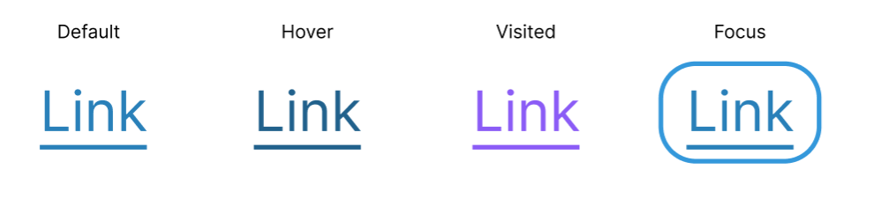
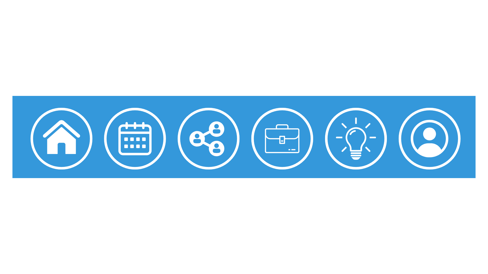
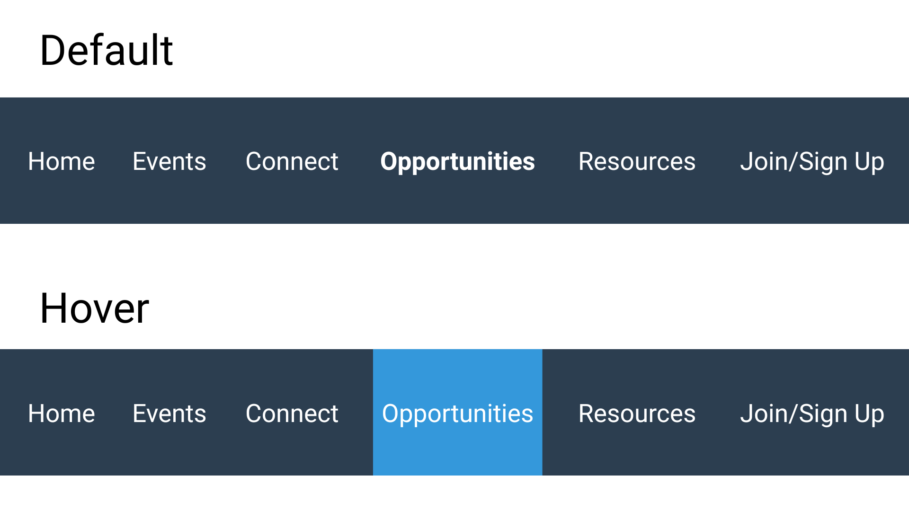
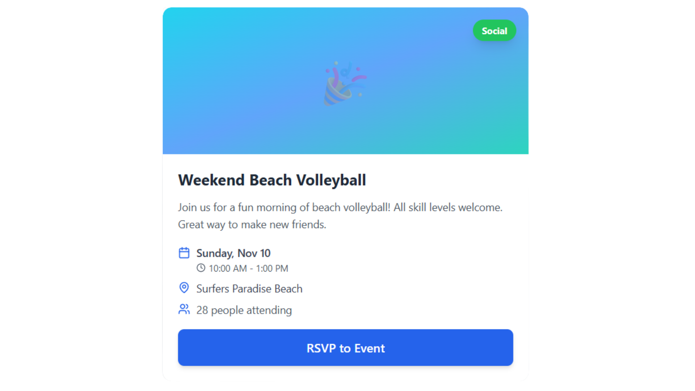
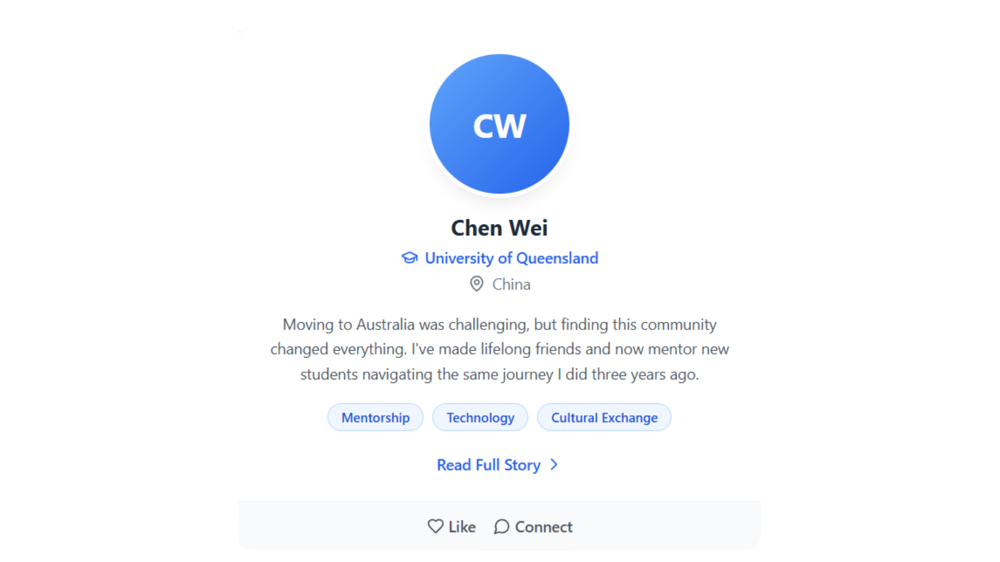
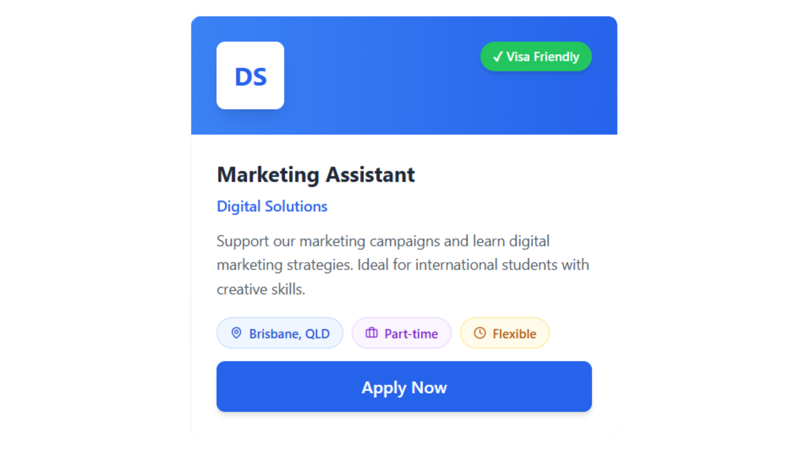

Explore the interactive components and functional elements that define how users interact with our site. This guide showcases buttons, forms, navigation patterns, and other UI elements designed for usability, accessibility, and clear feedback.
Button Styles
Our button design provides clear affordances and visual feedback across all interaction states. Each button type serves a specific purpose in guiding user actions.
Primary Button
Purpose: Primary buttons are used for the main call-to-action on each page or section. They use our brand color (#3498DB) with high contrast white text to draw user attention.
Affordance: The rounded corners, padding, and bold color signal that this element is clickable. The button shape follows familiar web conventions that users expect.
Feedback: Hover state darkens the background and adds subtle shadow. Active (pressed) state scales down slightly to simulate physical button press. This multi-sensory feedback confirms user interaction.
Accessibility: Meets WCAG AA contrast ratio (4.5:1). Focus state includes visible outline for keyboard navigation. Works for Maya who needs clear interface elements and Ahmed who may use keyboard navigation.
Secondary Button
Purpose: Secondary buttons are used for less prominent actions or alternatives to the primary action. They use an outlined style to create visual hierarchy without competing with primary buttons.
Affordance: Border and text color match the primary blue, maintaining brand consistency while appearing less dominant than filled buttons.
Feedback: Hover state fills the background while maintaining the outline, creating clear visual feedback. This helps international students like Sofia understand the interface is responding to their actions.
Accessibility: Border width is 2px minimum for visibility. Focus state includes outline offset for clear keyboard navigation feedback.
Disabled Button State
Purpose: Disabled buttons show users when an action is unavailable (e.g., form not complete, already registered for event).
Visual Design: Reduced opacity (50%) and no hover effects communicate that the button cannot be clicked. Cursor changes to "not-allowed" to reinforce this.
Accessibility: Uses the disabled attribute so screen readers announce "Submit, button, dimmed" or similar. This helps all users understand the button's current state.
Icon-Only Buttons
Purpose: Icon buttons save space in compact layouts like mobile navigation or card actions.
Accessibility: Every icon button includes aria-label attribute to describe its purpose for screen reader users. This is critical because icons alone may not be universally understood, especially for international students with varying cultural contexts.
Visual Design: Minimal square/circular buttons with icon centered. Hover state adds background color to show interactivity without overwhelming the design.
Link Styles
Link states are designed to support accessibility and provide clear visual feedback for all users. Each state provides clear signifiers to help users understand their interactions.

Link States Design: Our links use multiple visual cues beyond color to ensure accessibility. The default state uses underlining and color (#3498DB) to distinguish links from body text. Hover state adds background highlighting for clear feedback. Visited links use a distinct purple shade to help users track their navigation. Focus states feature a prominent outline meeting WCAG 2.4.7 for keyboard users, supporting Ahmed and other users who may rely on keyboard navigation.
Navigation Components
Our navigation design ensures users can easily find content and understand where they are within the site hierarchy. The design supports both mobile and desktop experiences with clear visual feedback.

Mobile Navigation: Icon-based navigation provides universal recognition across language barriers, crucial for international students like Sofia who may have varying English proficiency. Touch targets meet the 44x44px minimum for accessibility.

Desktop Navigation: Text-based navigation provides clear labels for desktop users. Hover states use color change for feedback. Active page maintains consistent styling with the mobile version with the icon or text weight changing to highlight. The navigation structure mirrors the site map hierarchy, making it predictable and easy to understand for new users.
Card Components
Cards are used throughout the site to display events, member highlights, and opportunities in a consistent, scannable format. Each card type is optimized for its specific content while maintaining visual consistency.

Event Card Design: Features clear visual hierarchy with image at top, color-coded badge for event type (Social, Professional, Cultural, Academic), and prominent RSVP button. Icons accompany date and location for universal understanding. This supports Maya's need to find social events and Ahmed's goal to promote cultural celebrations. The card uses consistent spacing and our primary blue (#3498DB) for interactive elements.

Member Highlight Card: Designed to humanize the community with profile photo, name, university affiliation, and story preview. The "Read full story" link encourages engagement. This card type helps Chen share his journey and allows Luca to find people from his home country. Accessible alt text describes each member photo for screen reader users.

Opportunity Card Design: Highlights visa compatibility with prominent badge (addressing Maya's and Sofia's needs), includes company branding, and clear call-to-action. Tags for location and employment type help users scan quickly. The hover state adds subtle shadow to indicate interactivity while maintaining professionalism appropriate for career opportunities.
Form Design
Our form design prioritizes clarity, accessibility, and helpful feedback to guide users through data submission. This community form demonstrates our approach to collecting user information while supporting diverse users including international students with varying English proficiency.
Join the Community Form
This form submits data to the CCI Community API, demonstrating validation, accessibility, and user feedback principles.